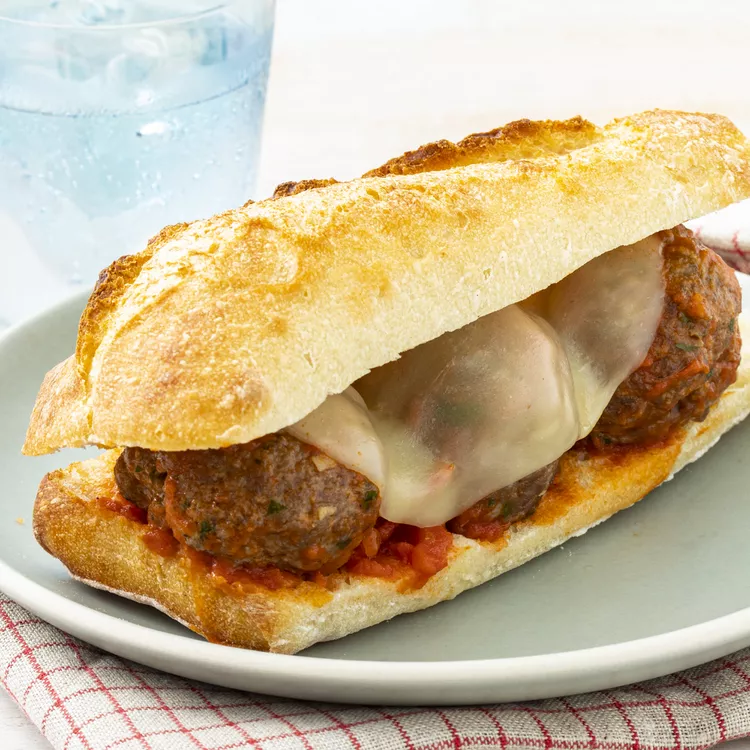

Odin Recipes
HOME
Meatball Sandwich

Ingredients
- 1 pound ground beef
- ¾ cup bread crumbs
- 1 large egg, beaten
- 2 cloves garlic, minced
- 2 tablespoons grated Parmesan cheese
- 2 tablespoons chopped fresh parsley
- 2 teaspoons dried Italian seasoning
- 1 French baguette
- 1 tablespoon extra-virgin olive oil
- ½ teaspoon garlic powder
- 1 pinch salt, or to taste
- 1 (14 ounce) jar spaghetti sauce
- 4 slices provolone cheese
Directions
- Preheat the oven to 350 degrees F (175 degrees C).
- Combine ground beef, bread crumbs, egg, garlic, Parmesan cheese, parsley, and Italian seasoning in a large bowl. Mix with your hands until well combined. Shape
mixture into 12 meatballs, and place in a baking dish.
- Bake meatballs in the preheated oven until cooked through, 15 to 20 minutes. An instant-read thermometer inserted into the center should read at least
160 degrees F (71 degrees C).
- While the meatballs are cooking, cut baguette in half lengthwise and open like a book. Remove and discard remove some of the bread from the inside to make a well
for the meatballs. Brush with olive oil and season with garlic powder and salt. Place baguette on a baking tray, open and with the oiled sides facing up.
- When the meatballs have 5 minutes left, slip the baguette into the oven and cook until lightly toasted.
- Meanwhile, warm spaghetti sauce in a saucepan over medium heat.
- Remove meatballs from the oven. Use a slotted spoon to transfer them to the hot sauce; mix gently to coat with sauce.
- Spoon meatballs and sauce into one side of the baguette, nestling meatballs in the well. Top with slices of provolone cheese.
- Return to the oven until cheese is melted, 2 to 3 minutes.
- Cool slightly, then cut into 4 sandwiches.